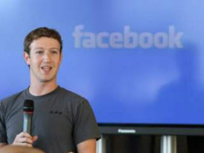

Mark Zuckerberg billion dollar tax bill
Facebook founder and CEO faces a very hefty 2012 tax bill

By: Stacy Cowley, CNN NEW YORK (CNNMoney) - Facebook’s stock market debut left founder and CEO Mark Zuckerberg with a paper fortune currently valued at $13 billion - and a 2012 tax bill of around $1.1 billion.
Zuckerberg’s whopping tax hit stems from his move last May to increase his stake in Facebook. On the day of Facebook’s initial public offering, Zuckerberg exercised a stock option and purchased 60 million Facebook shares at a “strike price” of 6 cents each.
Even if those shares are never sold, the IRS treats them as ordinary income at the time the options are exercised. The rationale is that such options are a form of compensation, just like regular wages.
For Zuckerberg, that means reporting income last year of nearly $2.3 billion from his stock options alone. Add together the top 2012 federal tax rate of 35% and the top California rate of 13.3% - the highest in the nation - and you get a total tax rate of 48.3%.
That’s before factoring in some deductions and any other income Zuckerberg collected last year. Only Uncle Sam and California’s tax agency know exactly what’s in Zuckerberg’s return, but three California CPAs that CNNMoney consulted ran the numbers and believe Zuckerberg’s bill for the year will probably exceed $1 billion.
That’s really unusual … even for billionaires.
“With numbers that large, it’s usually capital gains, not ordinary income,” said Toby Johnston, a partner at tax firm Moss Adams LLP’s Silicon Valley office who works with wealthy clients. Investors profiting off their gains paid a significantly lower tax rate last year than Facebook’s founder will. The highest federal capital gains rate in 2012 was 15%. It goes up to 23.8% (including a Medicare surtax) this year.
The Internal Revenue Service doesn’t comment on the returns of individual taxpayers, but each year it releases aggregate data on the 400 U.S. tax filers with the largest reported incomes. The average top earner had income of $202 million and a federal income tax bill of $41 million for 2009, the most recent data available.
A Facebook spokeswoman declined to comment on Zuckerberg’s taxes.
To cover the giant bill he knew was coming, Zuckerberg dipped into his trove of Facebook stock. He sold 30.2 million shares during Facebook’s IPO, taking in $1.135 billion. At the time, Facebook said in a regulatory filing that Zuckerberg planned to use the “substantial majority” of those proceeds to cover the taxes on his stock-option purchase.
And Zuckerberg has another big tax hit looming: He is still sitting on 60 million unexercised options that expire in late 2015. At Facebook’s current share price, those options would generate taxable income of $1.6 billion if he cashed them in. If he cashed then in today at current tax rates, that would amount to a $826 million bill.
The U.S. Treasury will benefit from Zuckerberg’s taxes. So will California, which is getting a windfall as thousands of Facebook employees cash in on stock grants and options. California expects to collect roughly $1.5 billion in tax revenue tied to Facebook’s IPO, according to the latest estimate from the state’s Legislative Analyst’s Office.
So how do you pay a tax bill that’s bigger than some nations' entire annual GDP? (We’re looking at you, Grenada.)
California requires an electronic payment for all tax bills larger than $80,000, but the IRS will take a paper check for any amount.
Watching a sum that big vanish from your bank account sounds scary, right? The flip side is that at least you can afford it.
“Most people are thrilled, to tell you the truth,” said Stan Pollock, a San Francisco area accountant who specializes in handling tax issues for tech workers. “I have had very few clients that get these huge windfalls who have resented paying the tax. They know they got lucky.”
™ & © 2013 Cable News Network, Inc., a Time Warner Company. All rights reserved.